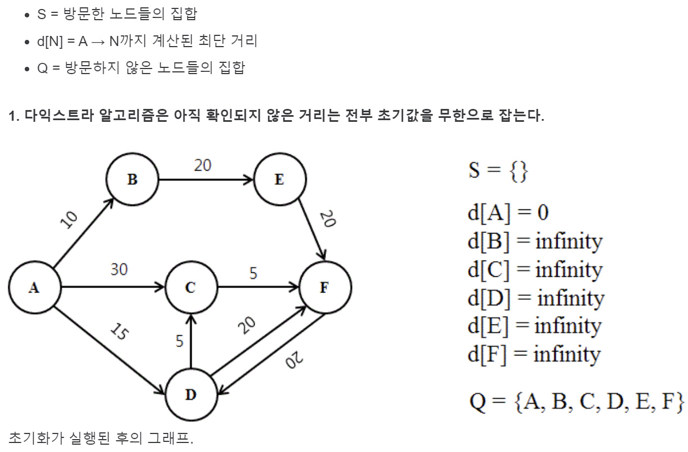
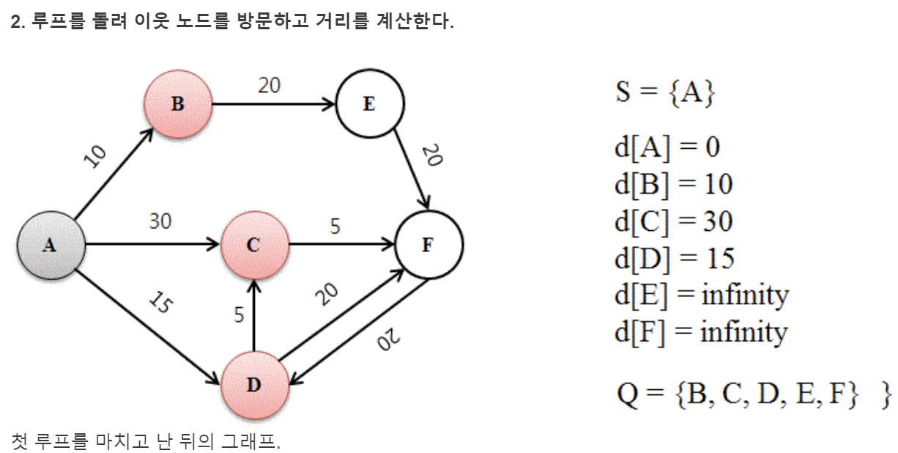
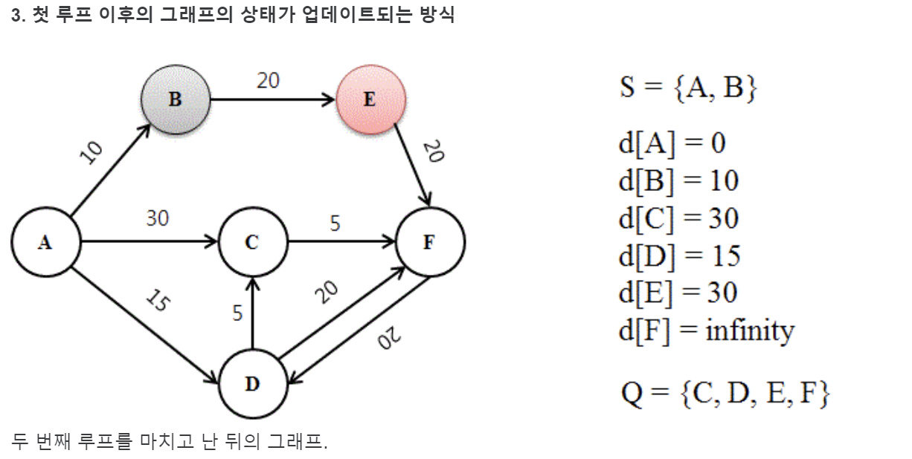
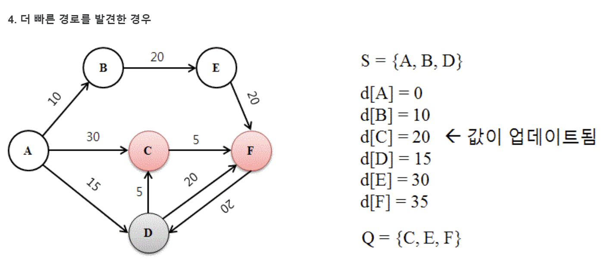
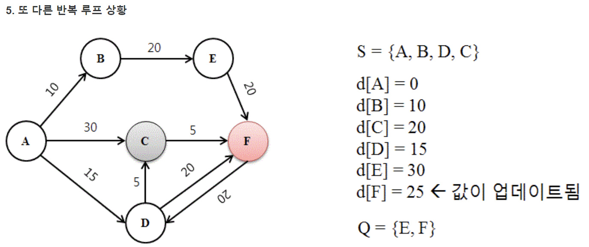

다익스트라 알고리즘 In JS
in Algorithm
다익스트라 알고리즘이란?
음의 가중치가 없는 그래프의 한 정점에서 모든 정점까지의 최단거리를 각각 구하는 알고리즘
시간 복잡도
O(\(V^2\))인데, 우선순위 큐를 활용해 개선 된 다익스트라 알고리즘에선 O((V+E)logV)로 개선 됨.
- V는 정점의 개수, E는 한 정점의 주변 노드
동작 과정(그림)
    
코드로 이해
기본 구현 [인접 배열 방식]
const N = 6;
// 인접 배열 초기화
const graph = [
[0, 10, 30, 15, Infinity, Infinity ],
[Infinity, 0, Infinity, Infinity, 20, Infinity],
[Infinity, Infinity, 0, Infinity, Infinity, 5],
[Infinity, Infinity, 5, 0, Infinity, 20],
[Infinity, Infinity, Infinity, Infinity, 0, 20],
[Infinity, Infinity, Infinity, 20, Infinity, 0],
]
// 방문 여부 체크할 배열
const visited = Array(N).fill(false);
// 1번 노드로부터 각 노드까지의 최단 거리를 저장한 배열 생성
const dist = Array(N).fill(Infinity);
// 방문하지 않았으면서 거리 테이블에서 가장 작은 값을 가진 노드 탐색
const findSmallestNode = (visited, dist) => {
let minDist = Infinity;
let minIdx = 0;
for(let i=0; i<dist.length; i++) {
if(visited[i]) continue;
if(dist[i] < minDist) {
minDist = dist[i];
minIdx = i;
}
}
return minIdx;
}
// 다익스트라 알고리즘 수행
const dijkstra = (graph, visited, dist) => {
// 시작 노드는 0으로 초기화
dist[0] = 0;
for(let i=0; i<dist.length; i++) {
const nodeIndex = findSmallestNode(visited, dist);
visited[nodeIndex] = true;
for(let j=0; j<dist.length;j++) {
if(visited[j]) continue;
dist[j] = Math.min(dist[j], dist[nodeIndex]+graph[nodeIndex][j]);
}
}
}
dijkstra(graph,visited,dist)
console.log(dist)
- 코드를 확인해보면 가장 dist중에 가장 작은 값을 가진 노드를 찾는데 N
- 그 노드와 인접한 노드 + 그 노드까지 거리 or 목적지 노드까지 거리 중 최소 값을 구하는데 N해서
\(N^2\)의 시간복잡도를 가지는 것을 알 수 있다.
우선순위 큐 활용 구현 [인접 리스트 방식]
// 우선순위 큐 클래스 정의
class PriorityQueue {
constructor() {
this.queue = [];
}
enqueue(element, priority) {
this.queue.push({ element, priority });
this.sort();
}
dequeue() {
return this.queue.shift();
}
sort() {
this.queue.sort((a, b) => a.priority - b.priority);
}
isEmpty() {
return this.queue.length === 0;
}
}
const N = 6;
// 인접 배열 초기화
const graph = [
[0, 10, 30, 15, Infinity, Infinity ],
[Infinity, 0, Infinity, Infinity, 20, Infinity],
[Infinity, Infinity, 0, Infinity, Infinity, 5],
[Infinity, Infinity, 5, 0, Infinity, 20],
[Infinity, Infinity, Infinity, Infinity, 0, 20],
[Infinity, Infinity, Infinity, 20, Infinity, 0],
]
// 방문 여부 및 최단 거리 테이블 초기화
const visited = Array(N).fill(false);
const dist = Array(N).fill(Infinity);
// 시작 노드는 0으로 초기화
dist[0] = 0;
// 우선순위 큐 초기화
const pq = new PriorityQueue();
pq.enqueue(0, 0);
// 시작 노드는 0으로 초기화
dist[0] = 0;
// 다익스트라 알고리즘 수행
const dijkstra = (graph, visited, dist) => {
// 시작 노드는 0으로 초기화
dist[0] = 0;
while (!pq.isEmpty()) {
const { element: nodeIndex, priority: currentDistance } = pq.dequeue();
if (visited[nodeIndex]) continue;
visited[nodeIndex] = true;
for (let j = 0; j < dist.length; j++) {
if (visited[j]) continue;
const newDistance = currentDistance + graph[nodeIndex][j];
if (newDistance < dist[j]) {
dist[j] = newDistance;
pq.enqueue(j, newDistance);
}
}
}
}
dijkstra(graph,visited,dist)
console.log(dist)
- 방문 하지 않은 node들중 dist값이 가장 작은 node를 선택 하는 부분을 우선순위 큐로 바꿈.
- 해당 과정에서 findSmallestNode()함수는 필요 없게 됨.